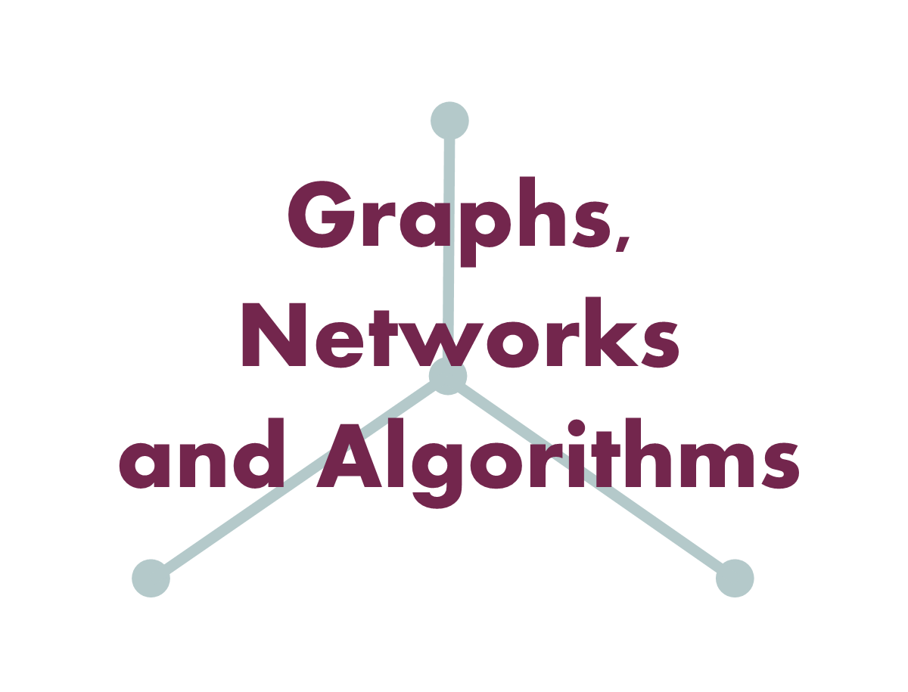
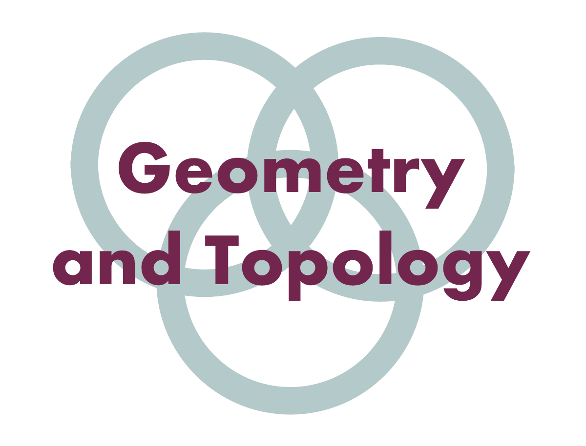
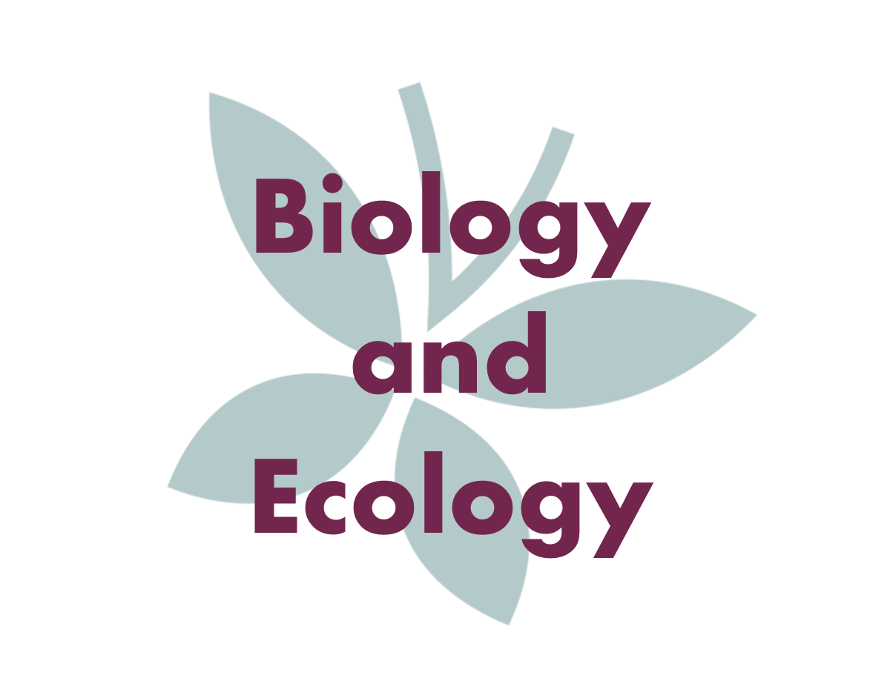
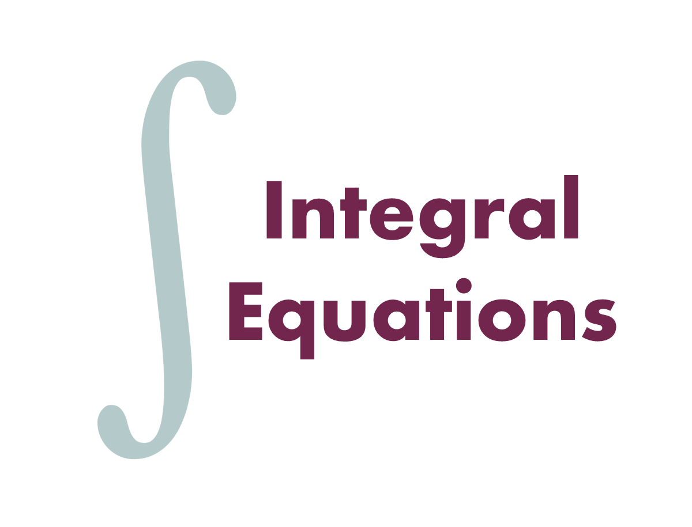
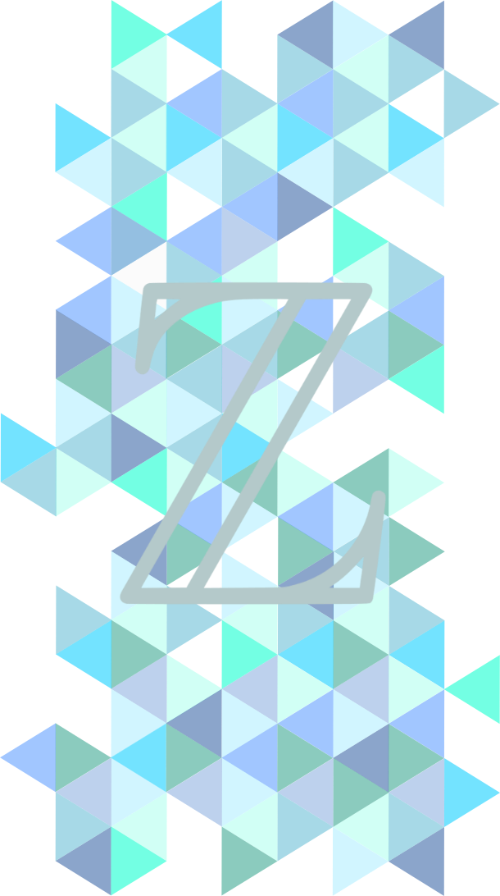
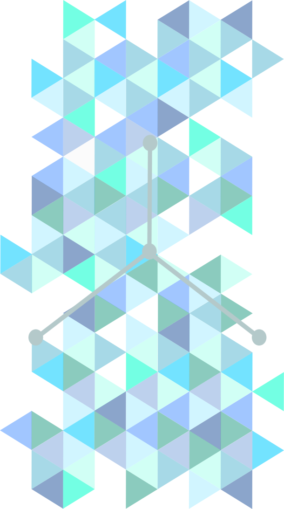
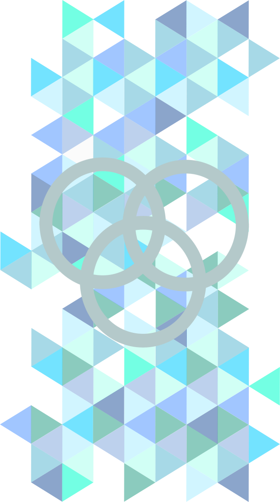
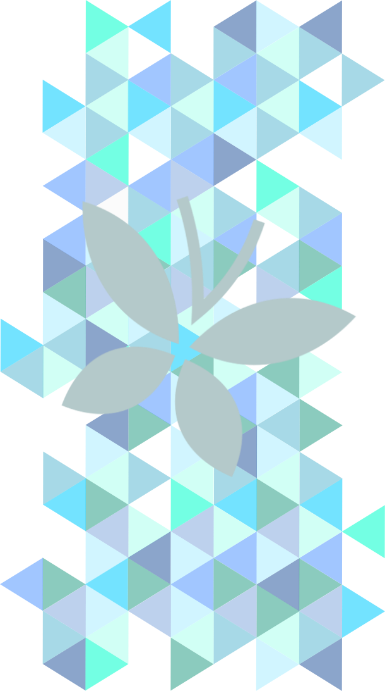
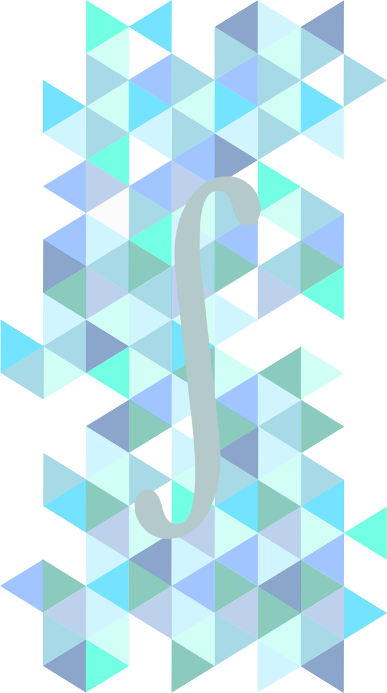

What is this?
After 3 years of study at the University of Exeter, I successfully completed my degree in Mathematics BSc and was eagar to begin exploring new aveneus to begin a career in software development. I have experience in many programming languages, but I wanted to be able to show my abilities as well as continue learning. Thus, I began working on projects such as this webpage, to improve my programming skills and also detail my university education. My aim was to produce a website that was interactive and also worked on other media like mobile phones to help me improve my Css, HTML and Javascript coding abilities. This was the result.
Email: 12nathanking@gmail.com
Year 1
Mathematical Structures
- Introduced the language of sets and functions which underpins of all modern pure mathematics and learnt how to use it to construct clear and logically correct mathematical proofs.
- Learnt methods used to prove rigorous general results about the convergence of sequences and series.
- Established the definitions and properties of abstract algebraic structures such as groups and vector spaces.
- Identified and applied properties of familiar number systems (natural numbers, integers, rational numbers) and the logical relationships between these properties.
Mathematical Modelling
- Studied the theory and tools for analysing real physical systems, such as pendulums, planetary motion, and predator-prey models.
- Developed programming and coding skills using the package MATLAB, and learnt how mathematical theory and computer-based modelling can complement each other to help us understand and predict the world around us.
- Perfomed mathematical research, helping me to understand the nature of the mathematical research community.
- Worked individually and as part of a team, carrying out three short projects that developed a range of individual and group research and communication skills.
Probability, Statistics and Data
- Developed my understanding about the mathematics of probability, ways to count possible outcomes, and the key ideas of statistical modelling and inference, in which probability is used to quantify uncertainty.
- Demonstrated knowledge of the basic ideas of statistical inference, including probability distributions, point and interval estimation and hypothesis tests.
- Gained experience employing new methods to analyse data using advanced statistical software such as the package R.
- Improved team management skills by working with a small group of students to produce a statistical report and poster on athletic perfomances in decathlons.
Mathematical Methods
- Performed accurate manipulations in algebra and calculus of several variables using a variety of standard techniques.
- Solved some specific classes of ordinary differential equations.
- Studied topics involving the geometry of conic sections, properties of functions such as continuity and differentiability, differential and integral calculus, limits and convergence of sequences and series including Power Series and Taylor Series.
- Developed my fundamental knowledge of vector and matrix theory, multivariate calculus, and the classification of various types of differential equations as well as analytical methods for solving them.
Year 2
Year 3






CONTEXT:
This was an investigative module where I selected a topic about cloud computing and was tasked with conducting research to produce a document with my findings and a recomendation for the University. I was able to collaborate with other students and finally had to opportunity to present our findings to a group of clients, lecturers and students. As a team of eight, we focused on how cloud computing resources can be used to improve the quality of education at the University of Exeter. We ran surveys with both CEMPS students and staff members to understand the University’s needs. We also looked into and trialled cloud services, including Microsoft Teams, GitLab and Azure Lab Services. In order to give a well rounded recommendation we also researched the costs of these services and compared this to the University’s present outlays.LINK TO THE REPORT
MY RESPONSIBILITIES:
Throughout the project I ran the trial group aimed at obtaining experience feedback from students who had just used Azure Lab Services. For this I acquired an active license from the IT team, set up the classroom lab containing virtual machines specifically designed for our task, created effective question sheets on coding, organised a number of students in a suitable computer lab to carry out the test. In addition, I managed the section on Microsoft Teams, acquiring the active license from IT team and running communications when an issue occurred. Another responsibility I had was managing the output of the report, including all the Microsoft Teams and Azure lab services sections as well as the conclusion, editing and proof reading. I also contributed by organising meetings and delivered an update presentation in front of an audience, aimed to inform interested parties.
×
SKILLS DEVELOPMENT:
- After working in a team I have developed my ability to effectively work in a group of new people and share ideas productively.
- Through my use of the software Azure Lab Services and Microsoft Teams I have developed my ability to use and learn new online software.
- I learnt how to use LaTeX, which was used for collaborative work to create the report.
- Through communications with James Bingham (IT team), I learnt how to professionally communicate to staff following technical issues.
- I developed my time management skills as I created a project plan to follow deadlines and attended weekly meetings.
- After giving a presentation and writing a report and I developed my public speaking and formal writing abilities.
CONTEXT:
Number theory is a vast and fascinating field of mathematics, consisting of the study of the properties of whole numbers. This module was aimed at aquiring working knowledge of the main concepts of classical elementary number theory. Throughout my lectures I learnt rigorous proof-based theory along with some of the theory behind modern computational techniques.Topics studied include divisibility properties of natural numbers, congruences, prime numbers, primality and factorisation, quadratic reciprocity, sums of squares and Fermat’s last theorem for the special case of sums of fourth powers. Covering one of the oldest and most popular areas of mathematics, this module built on basic ideas, provided modern answers to ancient problems and modern applications of classical ideas.

×
SKILLS DEVELOPMENT:
- From my time studying this module I acquired a sound foundation in number theory from a modern perspective.
- I developed my ability to problem-solve and formulate my solutions as mathematical proofs.
- Through seeing examples and finding my own solutions I was able to understand how more complex mathematical proofs are approached and written.
- I worked on self-management skills as I followed formative assessment deadlines and attended tutorials.
- When facing a difficult or concept question I would sometimes ask the lecture or another student, helping me work on my communication and confidence skills.
CONTEXT:
Graphs are viewed as a structure used to describe the underlying connectedness of a system. Therefore, it has a vast range of applications from designing circuits to running a business efficiently. In this module, I studied the theory of graphs and explored their practical application whilst solving a range of mathematical problems and applying them to real situations. Moreover, I was tasked with analysing the effectiveness and computational complexity of algorithms, learning how to refine my proposed methods to optimise their performance. Additionally there was a practical component to the module where I had to successfully integrate algorithms under timed conditions to solve problems such as the route inspection and maximum flow problemThis module also contained an investigative section where I researched epidemiology, which is a very relevant topic today.

×
SKILLS DEVELOPMENT:
- I became more effective at recognising problems that are computationally complex and require heuristic solution methods.
- Through research I was able to understand the concepts behind epidemiology including herd immunity and immunisation and how mathematics is applied to it.
- I learnt how analyse the effectiveness and computational complexity of algorithms for solving network problems.
- I was able to work independently and with minimal guidance material relevant to this topic.
- From my practical sessions I was able to develop problem solving skills under pressure, as well as recognising and applying algorithms to potential problems.
CONTEXT:
At its core, cryptography is the mathematical science of maintaining information security. In this module, I learnt and followed practical algorithms for encrypting plain messages into secret messages. These algorithms ranged from the simple ciphers used in ancient Rome to the sophisticated modern ciphers that secure worldwide banking transactions and diplomatic communications.Whilst studying two cryptosystems: symmetric and asymmetric, I also learnt ways to apply the principles of block ciphers with particular examples including the Vigenère, affine, and Hill cipher. The aim of this module was to apply number theory, linear algebra, and field theory to problems in the real world where it is important to transmit information securely. Python and Jupyter notebook was also used to perform complex computations that envolved encrypting or decrypting.
×
SKILLS DEVELOPMENT:
- I was able to extend my appreciation of how concrete problems typically require abstract theories for their solution.
- Through practice and formative assessments I gained a stronger understanding on how to apply number theory, linear algebra, field theory, and group theory to real-world problems.
- I developed an ability to perform sophisticated cryptographic computations, either by hand or using Python and the Jupyter notebook interface.
- As well as helping my ability to analyse algorithms, I gained an understanding of why they necessary and their importance when sending data.
CONTEXT:
In this module, I had the opportunity to study mathematical topics involving geometry, topology, and their applications in science and technology. I first became familiar with the mathematical description of curves and surfaces, and the idea of topological equivalence. Then I learnt about knot theory, braid theory, the classification of surfaces, and the shape of bubbles. Following this I dived into the applications of geometry and toplogy, including the geometry of DNA molecules, the shape of the universe, and the topology of magnetic fields.The module involved opportunities to learn about current cosmological speculations concerning the shape of the universe, and contained practical uses of the mathematical software MATLAB to model complex shapes.

×
SKILLS DEVELOPMENT:
- I gained a better understanding of possible geometrical structures and their mathematical descriptions.
- I learnt enhanced problem-solving skills, and worked on my ability to model geometric objects in computer graphics.
- Through sumbitting assessed work, I was able to improve self-management and time management skills.
- Completing formative and assessed questions enabled me to work with LaTeX and MATLAB, developing my skills with new concepts on computer software.
CONTEXT:
Climate change is a very relevant and important topic in our current time, so taking this module was an opportunity to understand the mathematics behind it as well as identify and analyse potential methods for dealing with it. Theory of climate change focused on the providing a background in the climate system and the mathematic components which underlies human-induced climate change.Various topics of study included observations of climate change, the greenhouse effect, regimes of atmospheric absorption, climate feedbacks, climate forcings, climate tipping points and geoengineering.
×
SKILLS DEVELOPMENT:
- I learnt how to apply a range of mathematical methods such as calculus and understood the use of small parameters to approximate and simplify climate system problems.
- I acquired a solid foundation in current problems we face from human-induced climate change.
- Following formative assessments and practical sessions I develop the skill of objectively analyzing the evidence for climate change and its causes, as well as the options for dealing with it (including mitigation, adaptation and geoengineering).
CONTEXT:
Biology and ecology focused on how mathematics may be applied to the biosciences in order to quantify model biological processes, from molecular processes working within living cell to the behaviour of populations and demographic phenomena. I also had the opportunity to build and analyse models using real world examples from nature.Topics in this module included: the population dynamics of insects, animals or fish, competitive exclusion of species, the behaviour of the chemical reactions kinetics that power living cells and mechanisms of biological pattern formation from reaction-diffusion equations.

×
SKILLS DEVELOPMENT:
- By the end of the module I was able to fully understand the role of mathematical modelling in real-life situations.
- When provided with examples and scenarios I developed an appreciation on how mathematics can be usefully employed in various aspects of the life sciences.
- I progressed my skills in drawing conclusions about likely behaviours and formulating simple models from them.
- I further developed expertise in using analytical and numerical techniques to explore mathematical models, including the use of MATLAB, Python and R.
- Practical exercises and formal lecture work helped my numerical and computational skills as well as literature searching and library skills when investigate discussed concepts.
CONTEXT:
Integral equations contained many methods for solving complex equations and contained many applications in physics and engineering. More specifically, I was introduced to the mathematics of integral equations, techniques of analysing such equations, and methods of solving them, analytically or numerically.The module began with concepts such as the Volterra integral equation and Fredholm integral equation, then gave detailed methods on how to solve these equations in cases where they are described as integral equations of the first or second kind, as well as being homogeneous or nonhomogeneous equations.
Other topics included approximation techniques for the Taylor series, structures of kernels and laplace transforms.

×
SKILLS DEVELOPMENT:
- By the end of the module I was able to successfully classify integral equations.
- Define particular concepts such as the Laplace transform and implement its use to solve integral equations.
- Through examples and exercises I understood real life applications that used integral equations and built on my ability to identify which techniques are suitable for which problems.
- I further developed the ability of structuring a problem and being able to solve it independently with logical reason.
- I was also able to effectively communicate and express my approach in written or spoken format.